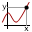
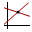

»
«


close
Window Options
y-max:
x-min:
x-max:
y-min:
Apply
Reset View
close
Trace
x:
y:
Trace
Insert equation
Execute
f (f (x))
Clear
GitHub
DEG
RAD
GRAD
Gridlines:
NORMAL
LESS
OFF
Precision:
LOW
MED
HIGH
ULTRA
Sorry, your browser does not support this application. The following browsers are supported:
Google Chrome
Mozilla Firefox
Opera